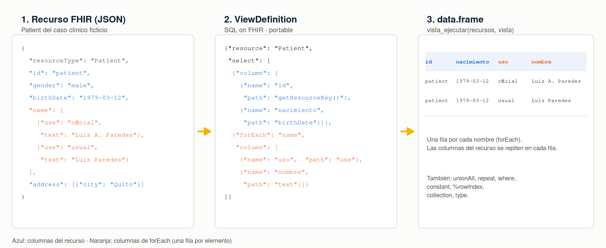
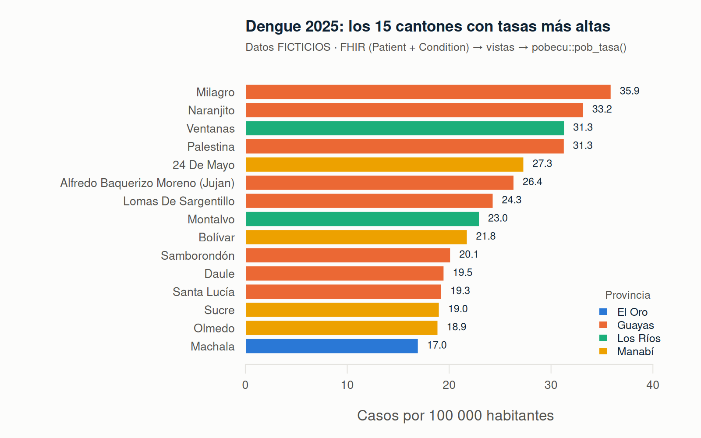
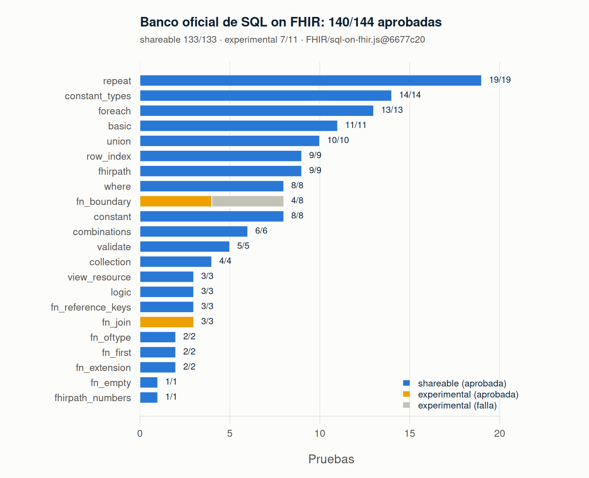
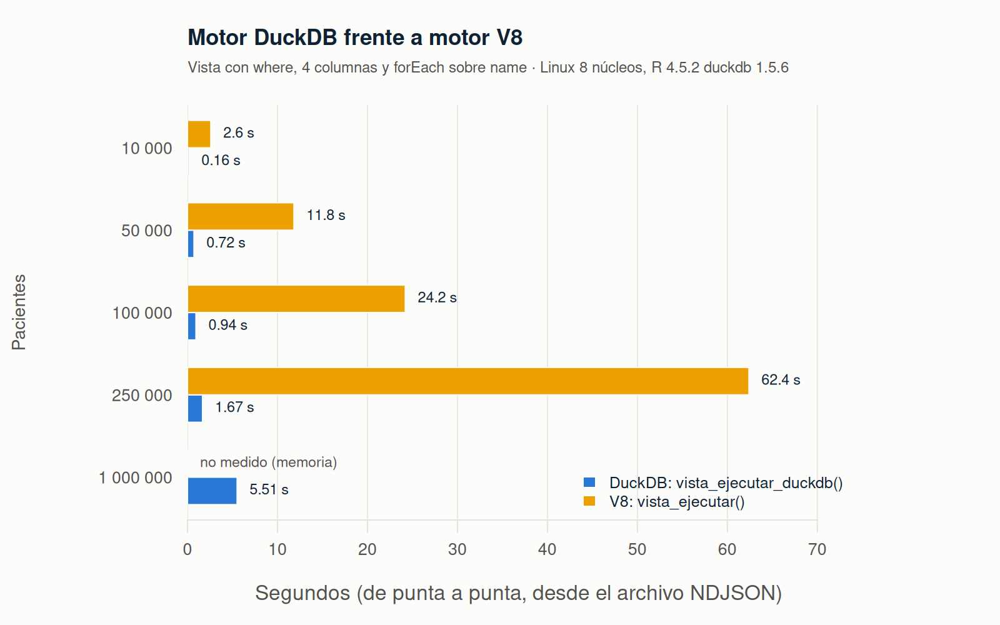

fhirviews lleva HL7 FHIR R4 a R: un cliente para hablar con cualquier servidor FHIR desde R y RStudio, como harías con Postman, y un motor que convierte los recursos FHIR en tablas con el estándar SQL on FHIR (ViewDefinition). El motor de vistas funciona dentro de R, sin Java ni Spark, devuelve data.frame y pasa todas las pruebas shareable del banco oficial de conformidad.

Nota: fhirviews es un paquete independiente, desarrollado a título personal. No es un producto de HL7 ni de ninguna otra institución. Los datos de los ejemplos son ficticios.
¿Por qué fhirviews?
FHIR es el estándar con el que hoy se intercambian datos clínicos: historias clínicas, laboratorios, vacunación, sistemas de vigilancia. Sus recursos son árboles JSON: un paciente tiene varios nombres, cada nombre varios apellidos, cada observación varios componentes… Ideal para intercambiar información, incómodo para analizarla: un indicador, una tasa o un modelo estadístico necesitan tablas.
Aplanar FHIR a mano es frágil: cada equipo escribe su propio código, con sus propias decisiones sobre qué hacer con las listas, las extensiones o los valores ausentes, y los resultados no se pueden comparar. SQL on FHIR resuelve esto con un formato estándar, el ViewDefinition: una descripción en JSON de qué columnas sacar de cada recurso, con expresiones FHIRPath. La misma vista da la misma tabla en cualquier implementación (Pathling, Aidbox, Google FHIR Data Pipes…). fhirviews trae ese estándar a R.
| Necesidad | Qué ofrece fhirviews |
|---|---|
| Consultar un servidor FHIR sin salir de R | Cliente completo: búsqueda con paginación, lectura, escritura, transacciones, $everything, $validate, errores legibles |
| Convertir recursos en tablas de forma reproducible | Motor de ViewDefinition conforme al estándar, validado con el banco oficial |
| Trabajar con volúmenes reales | Evaluación por lotes: unos 7 000 pacientes por segundo desde NDJSON |
| Analizar con SQL | Las vistas se guardan en DuckDB (u otra base DBI) con un comando |
| Enseñar y explorar | Panel Connections y addins de RStudio, peticiones al estilo Postman, datos de ejemplo |
Instalación
# install.packages("pak")
pak::pak("f-slg/fhirviews")fhirviews evalúa FHIRPath con fhirpath.js a través del paquete V8:
- Windows y macOS: V8 se instala como binario, sin pasos adicionales.
- Ubuntu, Debian, RHEL y derivados (x86_64 o arm64): V8 descarga automáticamente una versión estática del motor.
-
Fedora, Arch u otros: instala
v8-devel(o el equivalente) o defineDOWNLOAD_STATIC_LIBV8=1antes de instalar V8.
Opcionales: duckdb y DBI (vistas en SQL), rstudioapi (addins) y pobecu (población del Ecuador para tasas).
Inicio rápido
El paquete incluye el caso clínico ficticio del taller aprende-fhir (60 recursos de 29 tipos), así que el ejemplo funciona sin conexión:
library(fhirviews)
caso <- fhir_recursos(system.file("extdata", "caso_clinico.ndjson",
package = "fhirviews"))
signos <- vista_crear(
"Observation",
c(fecha = "effective.ofType(dateTime)",
medida = "code.text",
valor = "value.ofType(Quantity).value",
unidad = "value.ofType(Quantity).unit"),
where = "value.ofType(Quantity).exists()"
)
vista_ejecutar(caso, signos)
#> id fecha medida valor unidad
#> 1 obs-temp 2025-03-20T07:30:00-05:00 Temperatura corporal 38.40 °C
#> 2 obs-fr 2025-03-20T07:30:00-05:00 Frecuencia respiratoria 20.00 respiraciones/min
#> 3 obs-fc 2025-03-20T07:30:00-05:00 Frecuencia cardíaca 102.00 latidos/min
#> 4 obs-tumor 2025-05-08 Tamaño del tumor 3.50 cm
#> 5 obs-bsa 2025-07-01 Superficie corporal 1.77 m2Con un servidor real, los mismos pasos:
con <- fhir_conectar("https://hapi.fhir.org/baseR4")
observaciones <- fhir_buscar(con, "Observation", category = "vital-signs",
`_count` = 100, max_paginas = 5)
vista_ejecutar(observaciones, signos)Para qué se puede usar
1. Explorar un servidor FHIR como en Postman
con <- fhir_conectar("https://hapi.fhir.org/baseR4")
fhir_capacidades(con) # qué recursos y operaciones admite
fhir_ejecutar_texto("GET Patient?family=Paredes&_count=5")
fhir_leer(con, "Patient", "123")
fhir_everything(con, "Patient", "123") # todo lo del pacienteLas respuestas se imprimen con el estado HTTP y el JSON con sangría, y los errores muestran lo que dice el servidor (OperationOutcome):
fhir_leer(con, "Patient", "no-existe")
#> Error:
#> ! El servidor respondió 404 Not Found.
#> ✖ GET https://hapi.fhir.org/baseR4/Patient/no-existe
#> • [error] HAPI-2001: Resource Patient/no-existe is not knownEn RStudio, el servidor aparece en el panel Connections (tipos de recurso, columnas y vista previa), y los addins Ejecutar petición FHIR y Ejecutar ViewDefinition ejecutan el texto seleccionado con un clic.
2. Vigilancia epidemiológica: de casos FHIR a tasas por territorio
Los sistemas de notificación guardan cada caso como Patient + Condition. Con dos vistas y la población oficial del INEC del paquete pobecu se obtienen tasas por cantón:
dengue <- fhir_recursos(system.file("extdata", "dengue_2025.ndjson.gz",
package = "fhirviews"))
pacientes <- vista_ejecutar(dengue, v_paciente) # con el código DPA del cantón
casos <- vista_ejecutar(dengue, v_dengue) # solo diagnósticos confirmados
por_canton <- aggregate(paciente ~ dpa_canton, merge(casos, pacientes, ...), length)
pobecu::pob_tasa(por_canton, "casos")
El ejemplo completo está en la viñeta Tasas por cantón con FHIR y pobecu.
3. Indicadores y tableros con SQL
vista_duckdb() guarda varias vistas como tablas de DuckDB en un paso. A partir de ahí, cualquier indicador es una consulta SQL:
db <- vista_duckdb(dengue, list(
paciente = vista_crear("Patient", c(sexo = "gender", nacimiento = "birthDate",
provincia = "address.state.first()")),
dengue = vista_crear("Condition", c(
paciente = "subject.getReferenceKey(Patient)",
inicio = "onset.ofType(dateTime)",
grave = "code.coding.where(system = 'http://hl7.org/fhir/sid/icd-10').code = 'A91'"),
where = "verificationStatus.coding.where(code = 'confirmed').exists()")
))
DBI::dbGetQuery(db, "
SELECT p.provincia, count(*) AS casos,
round(100 * avg(CASE WHEN d.grave THEN 1 ELSE 0 END), 1) AS pct_graves,
round(avg(date_diff('year', CAST(p.nacimiento AS DATE),
CAST(d.inicio AS DATE))), 1) AS edad_media
FROM dengue d JOIN paciente p ON d.paciente = p.id
GROUP BY p.provincia ORDER BY casos DESC")
#> provincia casos pct_graves edad_media
#> 1 Guayas 329 5.2 29.7
#> 2 Manabí 136 5.1 27.7
#> 3 Los Ríos 111 14.4 28.3
#> 4 El Oro 85 10.6 30.54. Cohortes y conjuntos de datos para investigación
Las vistas son reproducibles y se pueden compartir: el mismo ViewDefinition JSON produce la misma tabla en fhirviews y en otras implementaciones. Para exportar una cohorte a Parquet o CSV basta con DuckDB:
vista_json(v_dengue) # compartir la definición
DBI::dbExecute(db, "COPY dengue TO 'dengue.parquet' (FORMAT parquet)")5. Interoperabilidad: cargar, validar y transaccionar
local <- fhir_conectar("http://localhost:8080/fhir") # por ejemplo, HAPI en Podman
fhir_validar(local, "paciente.json") # $validate: tabla de problemas
fhir_crear(local, "transaccion.json") # Bundle transaction -> POST [base]
for (r in caso) fhir_actualizar(local, r) # cargar el caso clínico con sus ids6. Docencia
El caso clínico de aprende-fhir viene incluido, fhir_tabla() da un vistazo rápido sin escribir vistas, vista_fhirpath() permite probar expresiones FHIRPath una a una y vista_validar() explica qué está mal en un ViewDefinition:
vista_fhirpath(caso[1], "name.where(use = 'official').text")
#> [1] "Luis Alberto Paredes Cevallos"Cómo funciona
flowchart LR
subgraph Fuentes
S["Servidor FHIR R4"]
F["Archivos JSON, NDJSON,<br/>Bundle, .ndjson.gz"]
L["Listas de R"]
end
subgraph Cliente["Cliente FHIR (httr2)"]
B["fhir_buscar()<br/>paginación por next"]
P["fhir_leer(), fhir_crear(),<br/>$everything, $validate"]
end
subgraph Motor["Motor de vistas (R)"]
R["fhir_recursos()<br/>conserva el JSON original"]
V["vista_validar()"]
E["vista_ejecutar()<br/>evaluación por lotes"]
end
subgraph JS["V8"]
FP["fhirpath.js 5.2.1<br/>+ almacén de nodos tipados"]
end
S --> B --> R
S --> P
F --> R
L --> R
R --> E
V --> E
E <-->|"una llamada por<br/>expresión y nivel"| FP
E --> T["data.frame"]
T --> D["DuckDB / SQL"]
T --> A["Análisis en R,<br/>pobecu, gráficos"]Cliente. Las peticiones usan application/fhir+json, se reintentan si el servidor está saturado (429/503) y convierten el OperationOutcome de los errores en mensajes legibles, con una clase de error por código HTTP. La búsqueda sigue los enlaces next de cada Bundle y se detiene si el servidor repite uno. El token de acceso solo se envía al servidor de la conexión y se avisa si viajaría sin cifrar.
sequenceDiagram
participant R as fhir_buscar()
participant S as Servidor FHIR
R->>S: GET Patient?family=Paredes&_count=100
S-->>R: Bundle (100 entradas, link next)
R->>S: GET [link next]
S-->>R: Bundle (100 entradas, link next)
R->>S: GET [link next]
S-->>R: Bundle (37 entradas, sin next)
Note over R: 237 recursos en un fhir_recursos,<br/>con el JSON de cada páginaMotor de vistas. El ViewDefinition se valida (estructura, nombres, unionAll, constantes, compilación de cada expresión FHIRPath) y se ejecuta por lotes: cada column, forEach o where es una sola llamada a V8 para todos los recursos a la vez, no una por recurso. Los elementos que devuelven forEach y repeat se guardan en V8 como nodos tipados, de modo que ofType() y extension() funcionan también en elementos anidados. Las filas de cada parte se combinan con índices (rep() y sequence()) en R.
flowchart TD
A["Recursos del tipo de la vista"] --> W{"where"}
W -->|"cumplen"| S["select"]
S --> C["column<br/>una fila por recurso"]
S --> FE["forEach / forEachOrNull / repeat<br/>una fila por elemento,<br/>con %rowIndex"]
S --> U["unionAll<br/>filas de varias ramas"]
FE --> C2["column, select y unionAll<br/>anidados"]
C --> X["producto de filas<br/>por recurso de origen"]
C2 --> X
U --> X
X --> T["data.frame tipado<br/>(type o modelo FHIR R4)"]Tipos. Con type, cada columna se convierte al tipo de R correspondiente (boolean a lógico, integer a entero, decimal a numérico, el resto a texto) y se avisa si algún valor no es compatible. Sin type, las columnas vacías toman el tipo del modelo de FHIR R4, para que la misma vista dé siempre los mismos tipos.
Seguridad. fhirpath.js corre aislado en V8, sin acceso a red ni a archivos (funciones como resolve() están desactivadas): un ViewDefinition no puede hacer peticiones ni leer datos fuera de los recursos que se le pasan.
Conformidad con SQL on FHIR
El paquete incluye el banco oficial de pruebas de SQL on FHIR, que se ejecuta en cada comprobación de integración continua. Pasan las 133 pruebas del perfil shareable (el que debe cumplir toda implementación) y 7 de las 11 experimentales.

Las cuatro que fallan son de lowBoundary() y highBoundary(), funciones experimentales de FHIRPath que dependen de la precisión decimal original del JSON y de la zona horaria. Para comprobarlo en tu equipo, o con la versión más reciente del banco:
vista_conformidad()
vista_conformidad(descargar = TRUE, informe = "informe.json") # formato oficialRendimiento
El tiempo crece de forma lineal con el número de recursos. Desde JSON o NDJSON (lo que devuelve un servidor o un $export), la vista pasa el texto original directamente a V8, sin volver a convertirlo:

Medido con data-raw/rendimiento.R (pacientes sintéticos, vista con where, cuatro columnas y forEach sobre name). Los recursos armados como listas de R son unas cuatro veces más lentos porque deben convertirse a JSON.
Funciones
| Grupo | Funciones | Para qué |
|---|---|---|
| Conexión |
fhir_conectar(), fhir_disponible(), fhir_capacidades()
|
Conectarse, comprobar que el servidor responde y ver qué admite |
| Lectura |
fhir_buscar(), fhir_leer(), fhir_everything()
|
Buscar con paginación, leer un recurso o todo un paciente |
| Escritura |
fhir_crear(), fhir_actualizar(), fhir_borrar()
|
Crear, actualizar, borrar y ejecutar transacciones |
| Validación | fhir_validar() |
Operación $validate, con la tabla de problemas |
| Peticiones libres |
fhir_peticion(), fhir_ejecutar_texto()
|
Cualquier otra petición, también escrita como en Postman |
| Recursos |
fhir_recursos(), fhir_tabla()
|
Reunir recursos de cualquier fuente y verlos como tabla rápida |
| Vistas |
vista_crear(), vista_leer(), vista_json(), vista_validar()
|
Definir, leer, exportar y validar ViewDefinition
|
| Ejecución |
vista_ejecutar(), fhir_vista(), vista_fhirpath()
|
Aplicar una vista (a recursos o directamente al servidor) y probar FHIRPath |
| SQL | vista_duckdb() |
Guardar vistas como tablas de DuckDB u otra base DBI |
| Conformidad | vista_conformidad() |
Ejecutar el banco oficial de pruebas de SQL on FHIR |
| RStudio |
fhir_conexion_activa(), fhir_desconectar()
|
Conexión activa del panel Connections y de los addins |
| Motor |
fhirviews_motor(), fhirviews_version_fhirpath()
|
Versión de fhirpath.js y del motor de JavaScript |
Comparación con otras herramientas
fhirviews no es la única forma de usar FHIR o SQL on FHIR desde R. En particular, el paquete pathling (CSIRO) también ejecuta ViewDefinition desde R con ds_view(), sobre Spark.
| fhirviews | pathling | fhircrackr | |
|---|---|---|---|
| Base técnica | R + fhirpath.js en V8 | Biblioteca Java de Pathling sobre Apache Spark (vía sparklyr) | R |
| Requisitos | Solo paquetes de R (V8) | Java y Spark | Solo paquetes de R |
Tablas con ViewDefinition (SQL on FHIR) |
Sí, vista_ejecutar()
|
Sí, ds_view()
|
No: descripciones propias con XPath |
| Resultado |
data.frame de R |
Spark DataFrame |
data.frame de R |
| Cliente REST de FHIR | Sí, en JSON: búsqueda con paginación, escritura, transacciones, $everything, $validate
|
Lectura con bulk export ($export) |
Sí, en XML: búsqueda, POST, PUT
|
| Terminologías (SNOMED CT, LOINC, ValueSet) | No | Sí, funciones tx_* con un servidor de terminología |
No |
| Volumen de datos | Memoria de una sesión de R | Distribuido: grandes volúmenes en un clúster | Memoria de una sesión de R |
| Banco oficial de SQL on FHIR | Incluido en el paquete (vista_conformidad()) |
Pathling figura en la página de implementaciones | No aplica |
| RStudio | Panel Connections y addins | Conexión de Spark | No |
| Documentación | Español | Inglés | Inglés |
¿Cuál elegir?
- pathling, para grandes volúmenes en Spark o en un clúster, o si necesitas operaciones de terminología.
-
fhirviews, para análisis en una sesión de R sin instalar Java ni Spark, para hablar con un servidor FHIR (leer, escribir, validar) y llevar los resultados a
data.frame, DuckDB o pobecu, y para enseñar. - fhircrackr, si ya trabajas con su formato de diseño de tablas o con recursos en XML.
Las vistas de SQL on FHIR son portables: un mismo ViewDefinition en JSON se puede ejecutar en fhirviews y en pathling. Los tres paquetes pueden convivir, porque sus funciones no comparten nombres.
Hoja de ruta
- Motor de FHIRPath escrito en R, como alternativa a V8 (la capa ya está separada:
options(fhirviews.motor = ...)). - Búsquedas largas por
POST [tipo]/_searchy exportación masiva$export. - Operaciones de SQL on FHIR 3.0 (
$run,$exportde vistas) ySQLQuery. - Caché del panel Connections para servidores lentos.
- Envío a CRAN, después de pobecu.
Documentación
- Primeros pasos: cliente, recursos y primeras vistas con el caso clínico.
- ViewDefinition en detalle: todos los elementos de la especificación, validación y DuckDB.
- Tasas por cantón con FHIR y pobecu: vigilancia epidemiológica de punta a punta.
- Cómo funciona por dentro: arquitectura, motor por lotes, tipos y seguridad.
- Referencia de funciones.
Paquetes relacionados
- pobecu: población del Ecuador por provincia, cantón y parroquia.
- geoecu: límites territoriales del Ecuador.
- aprende-fhir: taller de HL7 FHIR con un caso clínico ecuatoriano ficticio.
Contribuir
Las preguntas van en Discussions y los errores o propuestas en issues (hay una plantilla para problemas de conformidad con SQL on FHIR). Revisa la guía de contribución. Este proyecto sigue un código de conducta; al participar, te comprometes a respetarlo.
Cita
citation("fhirviews")Licencia
MIT © Ronald Fabricio Salas Guerrero. El paquete incluye fhirpath.js (NLM y Health Samurai, licencia tipo BSD) y el banco de pruebas de SQL on FHIR (MIT), sin modificar; el detalle está en inst/COPYRIGHTS.
FHIR® y HL7® son marcas registradas de Health Level Seven International; su uso no implica respaldo de HL7.